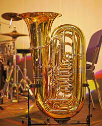
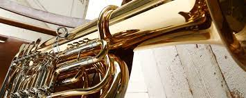

The tuba is the lowest-pitched musical instrument in the brass family. As with all brass instruments, the sound is produced by lip vibration a buzz into a mouthpiece. It first appeared in the mid-19th century, making it one of the newer instruments in the modern orchestra and concert band. The tuba largely replaced the ophicleide. Tuba is Latin for "trumpet". A person who plays the tuba is called a tubaist, a tubist, or simply a tuba player. In a British brass band or military band, they are known as bass players.
Prussian Patent No. 19 was granted to Wilhelm Friedrich Wieprecht and Johann Gottfried Moritz (1777-1840) on September 12, 1835 for a "bass tuba" in F1. The original Wieprecht and Moritz instrument used five valves of the Berlinerpumpen type that were the forerunners of the modern piston valve. The first tenor tuba was invented in 1838 by Carl Wilhelm Moritz (1810-1855), son of Johann Gottfried Moritz. The addition of valves made it possible to play low in the harmonic series of the instrument and still have a complete selection of notes. Prior to the invention of valves, brass instruments were limited to notes in the harmonic series, and were thus generally played very high with respect to their fundamental pitch. Harmonics starting three octaves above the fundamental pitch are about a whole step apart, making a useful variety of notes possible. The ophicleide used a bowl-shaped brass instrument mouthpiece but employed keys and tone holes similar to those of a modern saxophone. Another forerunner to the tuba was the serpent, a bass instrument that was shaped in a wavy form to make the tone holes accessible to the player. Tone holes changed the pitch by providing an intentional leak in the bugle of the instrument. While this changed the pitch, it also had a pronounced effect on the timbre. By using valves to adjust the length of the bugle the tuba produced a smoother tone that eventually led to its popularity. These popular instruments were mostly written for by French composers, especially Hector Berlioz. Berlioz famously wrote for the ophicleide in his compositions Symphonie fantastique and Benvenuto Cellini (opera). These pieces are now normally performed on F or CC tuba. Adolphe Sax, like Wieprecht, was interested in marketing systems of instruments from soprano to bass, and developed a series of brass instruments known as saxhorns. The instruments developed by Sax were generally pitched in E♭ and B♭, while the Wieprecht "basstuba" and the subsequent Cerveny contrabass tuba were pitched in F and C (see below on pitch systems). Sax's instruments gained dominance in France, and later in Britain and America, as a result of the popularity and movements of instrument makers such as Gustave Auguste Besson (who moved from France to Britain) and Henry Distin (who eventually found his way to America). The cimbasso is also seen instead of a tuba in the orchestral repertoire. The name is translated from "corno in basso" in German. The original design was inspired by the ophicleide and bassoon. The cimbasso is rare today, but it is sometimes used in historically accurate performances.
